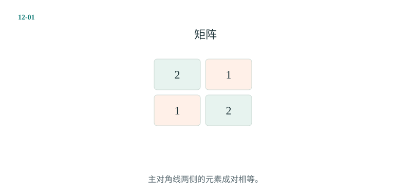
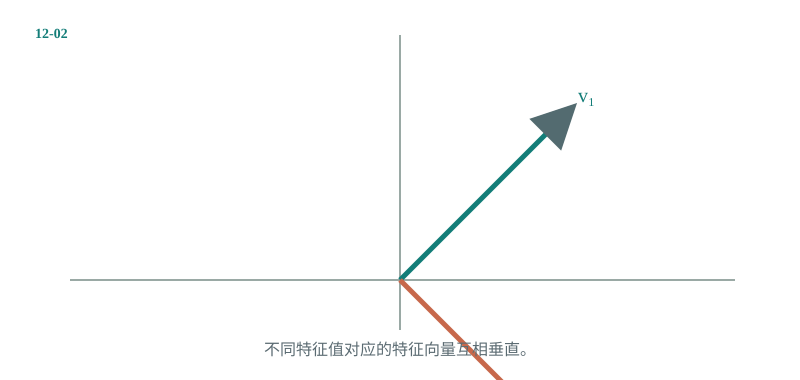
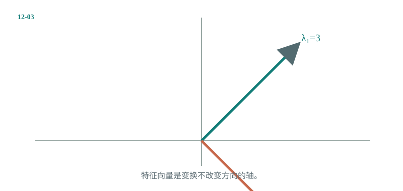
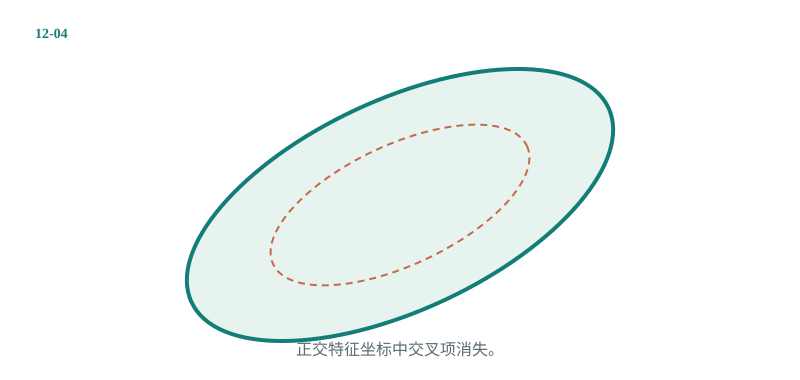
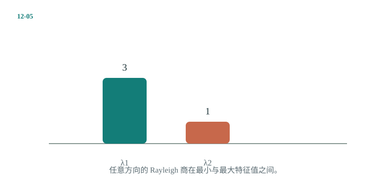
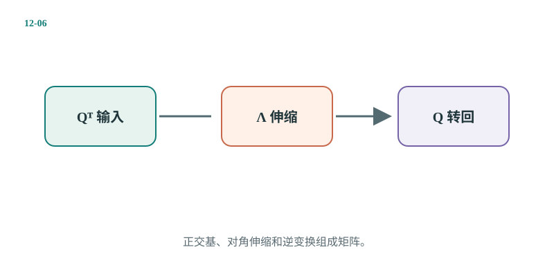
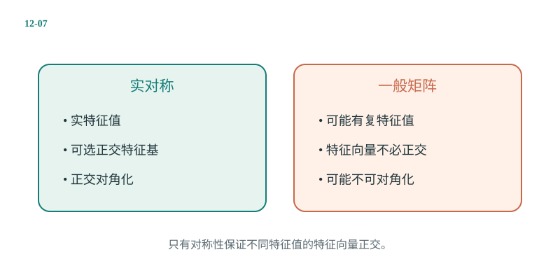
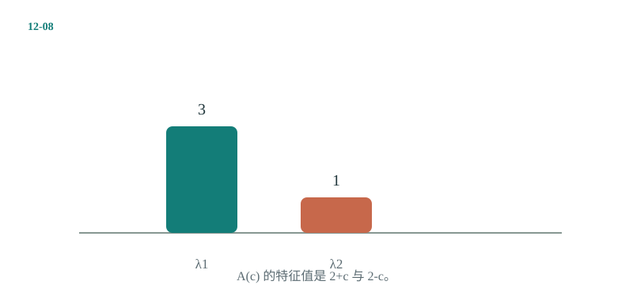

对称矩阵：为什么特征方向可以彼此垂直
对称矩阵的转置等于自身。这个简单条件带来强大的结构：实特征值、正交特征向量，以及漂亮的几何主轴。
01对称矩阵不是“看起来对称”这么简单
矩阵 A 对称，是指 Aᵀ=A，也就是 aᵢⱼ=aⱼᵢ。主对角线两侧的元素成对相等。它描述的是代数条件，不是图形外观。
对称矩阵在二次型、协方差矩阵等场景自然出现。若矩阵不是对称的，关于实特征值与正交特征向量的结论不能直接套用。

02不同特征值对应的特征向量必定正交
设 A=Aᵀ，Avᵢ=λᵢvᵢ，Avⱼ=λⱼvⱼ。由于 A 对称，(Avᵢ)ᵀvⱼ=vᵢᵀAvⱼ。代入特征值方程，得到 (λᵢ−λⱼ)vᵢᵀvⱼ=0。
若 λᵢ≠λⱼ，就只能有 vᵢᵀvⱼ=0。若特征值重复，也可以在对应特征子空间内选取正交规范基。

03例子：矩阵 [[2,1],[1,2]]
它的两个特征值是 3 和 1。对应方向分别是 (1,1) 与 (1,−1)，点积为 0。归一化后得到 q₁=(1,1)/√2、q₂=(1,−1)/√2。
它们是变换不改变方向的轴。沿 q₁ 伸长 3 倍，沿 q₂ 伸长 1 倍，其他向量的变化由这两个方向的线性组合决定。

04二次型把矩阵的主轴显现出来
对 A=[[2,1],[1,2]]，二次型 q(x)=xᵀAx=2x₁²+2x₁x₂+2x₂²。换到特征向量构成的正交坐标后，交叉项消失，表达式变为 3y₁²+y₂²。
因此对称矩阵的特征向量是二次型的主轴。把 q(x)=1 画成等值线，得到椭圆；沿特征向量方向就是椭圆的轴向。

05Rayleigh 商：在所有方向上测量伸缩
对非零 x，Rayleigh 商 R(x)=xᵀAx/(xᵀx)。若 A 对称，写 x 为正交特征向量的线性组合后，R(x) 是特征值的加权平均。因此它不会超出最小与最大特征值。
当 x 恰好是特征向量时，Rayleigh 商等于对应特征值。

06谱分解：矩阵是多个方向伸缩的总和
把正交单位特征向量放进 Q，把特征值放进对角矩阵 Λ，就有 A=QΛQᵀ。进一步展开，A=Σ λᵢ qᵢqᵢᵀ。每个 qᵢqᵢᵀ 是沿该方向的投影。
这个表达式说明：对称矩阵把空间分解成互相垂直的特征方向，并在每个方向上独立伸缩。

07反例：一般矩阵的特征向量不必正交
考虑 B=[[1,1],[0,2]]。它的特征值为 1 和 2；对应特征向量可取 (1,0) 与 (1,1)，点积为 1，并不正交。B 不是对称矩阵，所以前面证明中的 Aᵀ=A 这一步失效。
对实对称矩阵，所有特征值都是实数，且可以选择正交规范特征基；对一般矩阵，可能出现复特征值或缺少足够的特征向量。

08交互：改变非对角元素，观察特征值
对称矩阵 A(c)=[[2,c],[c,2]] 的特征方向始终是 (1,1) 与 (1,−1)，特征值分别是 2+c 与 2−c。拖动 c 可以观察特征值如何靠近、相等或改变符号。
当 c=0 时矩阵是 2I，任意正交基都是特征向量基；这是重复特征值情形，特征方向不唯一。

对称矩阵特征值实验
A(c)=[[2,c],[c,2]]，特征方向固定为 (1,1) 与 (1,−1)。
λ₁=3.0，λ₂=1.0
自测与思考
undefined
延伸阅读与来源
- MIT 18.06 · Symmetric Matrices and Positive Definiteness。实对称矩阵、正定性与特征值。
- MIT 18.06 · Introduction to Linear Algebra lecture notes。实对称矩阵的谱分解与正交对角化。